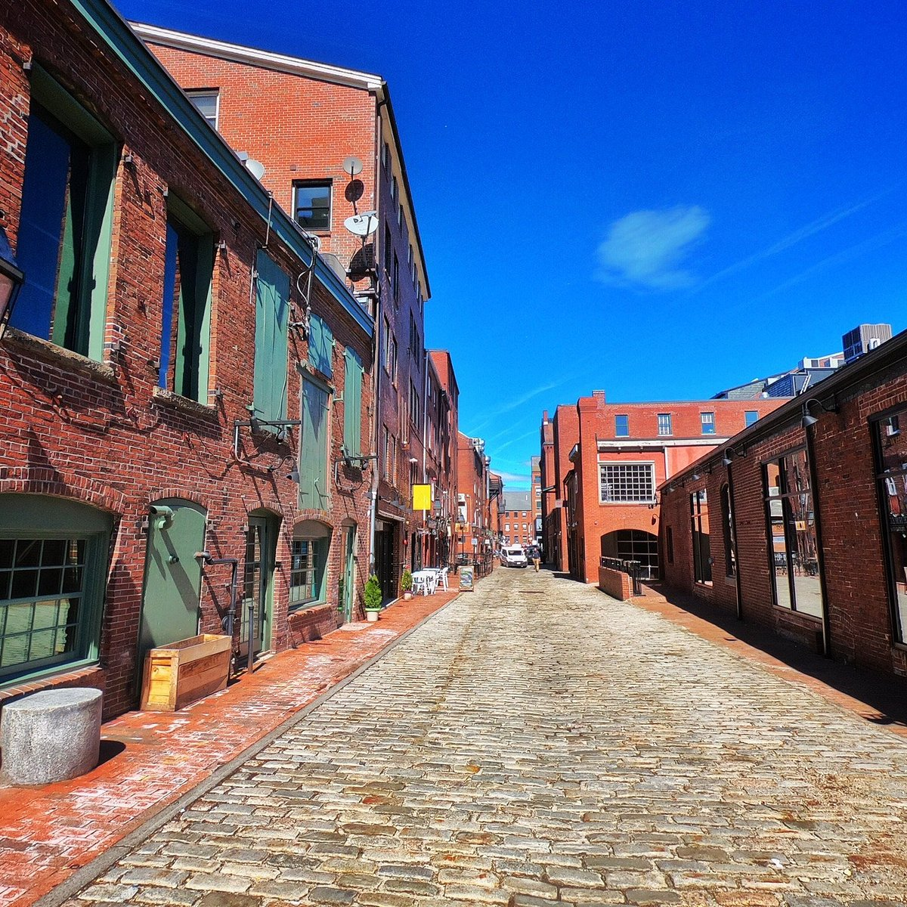

ER - closest to Old Port
Maine Medical Center
22 Bramhall Street, Portland, ME 04102Phone: (207) 662-0111
| Time | Activity |
|---|---|
| 8:00 AM | Breakfast at hotel |
| 8:30 AM | Morning Old Port walk (no driving needed from hotel) |
| 9:45 AM | Walk to Casco Bay Lines ferry terminal |
| 10:15 AM | Ferry to Peaks Island (17-min crossing) — backup boats at 9:15 or 11:15 |
| 10:45 AM – 3:30 PM | Peaks Island golf cart loop |
| 4:00 PM | Return ferry to Portland |
| 5:30 PM | Rest at hotel / early dinner |
| 7:30 PM | Eastern Promenade sunset walk |
Parking



Medical, groceries, and practical stops while based at the Hampton Inn.
Allergy & emergency
Keep this handy for allergy emergencies. Call 911 for life-threatening allergy reactions.
ER - closest to Old Port
Phone: (207) 662-0111
ER - alternate (~10-15 min)
~10-15 min drive from Old Port (not walking distance). Phone: (207) 879-3000
Grocery - nearby
~8–12 min drive. Full grocery + pharmacy.
Supermarket - nearby
Larger supermarket option.
Big-box - stock-up
Snacks, kids supplies — ~15–20 min drive.
Grocery - large
Large store near the mall — pair with Target for a big supply run.
There is no Costco in Greater Portland. For a big snack and supply run, Target + Hannaford at Maine Mall is the best one-stop option.
Pharmacy
Allergy meds / EpiPen check.
Pharmacy
Alternate CVS near Forest Ave Hannaford.
Lodging
Hotel restrooms — use before the ferry and Eastern Promenade loop.
Ferry terminal
Public restrooms at the ferry terminal.
Waterfront walk
Limited public facilities along the prom — plan a stop at the hotel or ferry terminal first.
Confirm before you go
Tomorrow is a long travel day to Bar Harbor — pack bags tonight and set an early alarm.